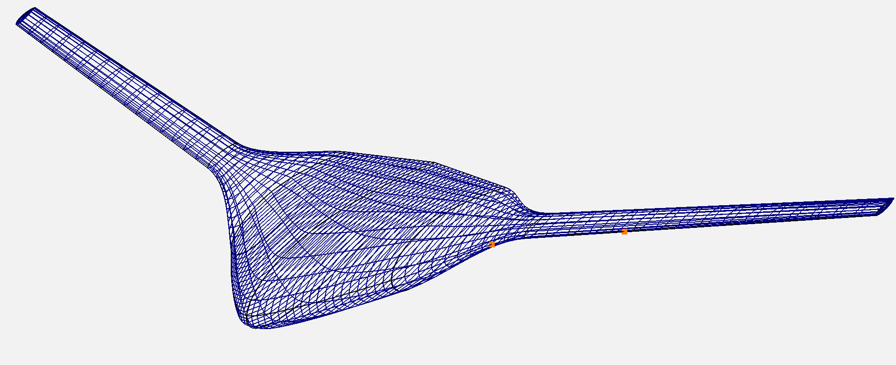
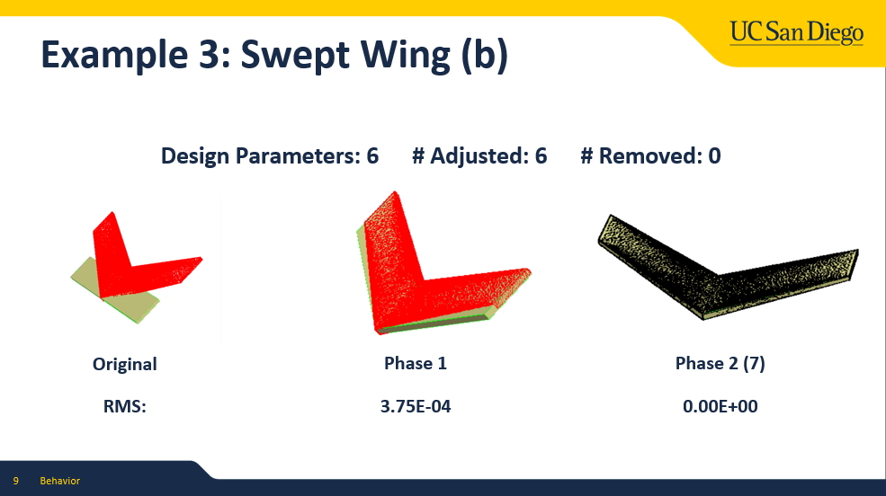

I joined the Large Scale Design Optimization (LSDO) Lab in January 2025, where the group develops scalable, gradient-based multidisciplinary design optimization (MDO) methods for complex aerospace systems. The lab emphasizes tightly coupled modeling of aerodynamics, structures, propulsion, and controls, enabling concurrent optimization of vehicle configuration, mission performance, and control strategies.
My work spans conceptual aircraft design and autonomous vehicle optimization, bridging low-fidelity design tools, high-fidelity models, and practical engineering constraints.
Blended Wing Body Aircraft Conceptual Design
I conducted preliminary conceptual design and sizing for a Blended Wing Body (BWB) aircraft configuration by generating initial geometry and performance parameters and validating mission requirements using OpenVSP.
This work included low-fidelity, single-point aerodynamic optimization to assess feasibility, explore the design trade space, and inform higher-fidelity multidisciplinary analyses.

Geometry-to-CAD Pipeline Investigation

The lab's gradient-based, adjoint MDO studies output optimized B-spline geometries, which are not directly usable as manufacturable CAD. I investigated Engineering Sketch Pad — specifically its approach of fitting parameterized CAD primitives to point cloud geometry — to assess whether the same methodology could be adopted for our aircraft and concept optimization outputs.
The goal was to reduce friction between optimization-driven design and downstream engineering workflows: a repeatable path from an optimizer's B-spline result to a high-fidelity, industry-ready CAD representation.
Concurrent Quadrotor Design & GNC Optimization
Comparison of warm-start and optimized quadrotor trajectories through disk gates using trajectory optimization.
I am optimizing quadrotor vehicle design concurrently with GNC algorithms by constructing a holistic vehicle and trajectory optimization framework through Model Predictive Control.
This approach integrates system-level performance models, mission requirements, and control-law constraints, enabling reduced design margins and improved vehicle efficiency compared to traditional sequential design methodologies.
The coupled problem is hard to converge. I implemented a segment-wise warm-starting strategy that seeds each trajectory segment from the previous solve, which produced stable, computationally efficient solutions across randomized racecourse configurations that had previously stalled or diverged.